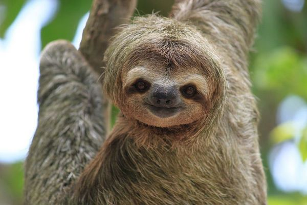
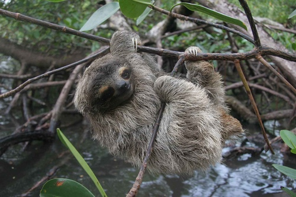
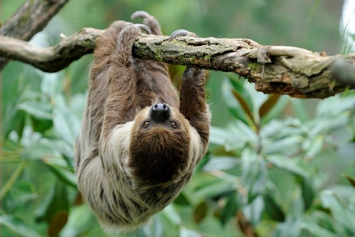

Виды
Трехпалый ленивец
Этот вид можно было бы назвать ленивцем обыкновенным, так как он, по сути, является самым типичным и распространенным представителем рода ленивцев. Все описанное выше касается, прежде всего, трехпалых ленивцев.
Карликовый ленивец
Характерным отличием этого трехпалого ленивца является его маленький размер (вследствие чего и такое название), это самых маленький из ленивцев, длина его тела в среднем составляет 40 см, а вес не более 2-3 кг. Во всем остальном кроме размера он похож на своего большого трехпалого сородича.
Двупалый ленивец
Как вы догадались, у этого вида ленивца в распоряжении одним пальцем меньше, чем у его ближайших сородичей. Несмотря на отсутствие одного пальца, двупалый ленивец также хорошо держится на ветках деревьев, как и его близкие родственники. Во всем остальном двупалый ленивец схож с трехпалыми.
Парочка Фактов о ленивцах
- В природе у ленивцев хватает естественных врагов, но эти медлительные создания спасаются от них благодаря тому, что большую часть своей жизни проводят на деревьях, куда может забраться далеко не каждый хищник.
- Средняя скорость перемещения ленивца — около двух метров в минуту.
- Ленивцы двигаются так медленно, чтобы экономить энергию. Это связано с тем, что все ленивцы питаются исключительно растительной пищей, не получая всех необходимых витаминов. Такой вот медлительный ритм жизни позволяет им не тратить лишние калории попусту.
- На меху некоторых видов ленивцев растут симбиотические сине-зелёные водоросли. Для ленивцев они играют роль маскировки.
- Ленивцы спускаются с деревьев только затем, чтобы справить нужду, причём бывает это обычно не чаще раза в 5-7 дней.
- Некоторые виды ленивцев, например, трёхпалые, могут поворачивать голову почти на 300 градусов, что больше, чем даже у сов
- Несмотря на некоторое внешнее сходство с приматами, ближайшими биологическими родственниками ленивцев являются броненосцы и муравьеды.
- Археологи утверждают, что некогда на Земле существовали ленивцы, размерами сравнимые с азиатскими слонами
- На переваривание некоторых видов растительной пищи у ленивцев уходит по 3-4 недели. Дело в том, что их пищеварительная система тоже отличается неторопливостью.
- Ленивцы — великолепные пловцы, как ни странно.
- Спуск с дерева каждый раз представляет для ленивца непростую задачу.
- У большинства видов ленивцев чрезвычайно острое обоняние, они способны с лёгкостью выделить интересующее их растение из общей массы джунглей на значительном расстоянии.
- Длинные когти служат ленивцам для более безопасного перемещения по деревьям, и не используются ими для самозащиты. Ленивцы совершенно безобидны и даже беззащитны.
- Жировые запасы в случае их появления у ленивцев откладываются в подушечках их задних лап.